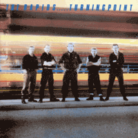

the Rapids - Turning Point (Album, 1985)
01 - The Man From Yesterday (2:31)
02 - Smile Of The Stranger (3:48)
03 - Eyes Of Darkness (2:38)
04 - Hard Luck (1:48)
05 - The Good The Bad And The Ugly (2:09)
06 - Night Out With The Boys (1:58)
07 - Hot Rod Blues (2:21)
08 - Street Whisper (2:09)
09 - Swords Of A Thousand Men (2:29)
10 - Nightlife (2:41)
11 - Valley Of Death (2:26)
12 - Do You Believe (4:12)
13 - Scratch Chicken Scratch (1:36)
14 - The Raid (2:55)
15 - Silver Bullet (2:59)
© Nervous Records :: [NERD 019] © Crazy Love Records 2001 :: [CLCD64105]
Notes
United Kingdom, England.
Lee Gocher - Vocals
Tony Farthing - Bass
Spike Arrow - Lead guitar
Mark Rogerson - Rhythm guitar
Mick Wiles - Drums
Scampi (Ian Fullwood) - Saxophone (on track 04)
Recorded at Tin Pan Alley Studios, London
My experience is based on its Digital release
reference information: Discogs®
Review
358/366 (Project 366)
Perhaps I will write that this is one of the albums that amazed me most. Not by its quality or by something steadfast. It's just probably one of the most rockingly experimental and vibrant (neo)Rockabilly albums of the 1980s. Almost Psychobilly, but with such a noticeable touch of a somewhat New Wave / Post-Punk and vocals in the spirit of old fashioned Metal music (epic and heavy ballad tones). Various sound effects (though quite straightforward) create something simply unimaginable! And despite its rather tough, rough and heavy sound - there is a kind of background of grooviness, perkiness and danceability. Drums lashed the beat and keep on to whip as much as they can. Restless rhythm guitar and bass, mighty lead guitar. Very original compositions and only one track is a cover version. Straight Rock'n'Roll.
Three bonus tracks perfectly show different sides of the band. "Scratch Chicken Scratch" is a furious (neo)Rockabilly with its craze and manic speed. "The Raid" is about this kind of the special mood of Rock and Metal music of the eighties, that is so much around Pop and Folk music. And "Silver Bullet" with a shakin', rockin' and rollin' rave. Quite entertaining arrangement and gruff vibe in the backtone, as are the songs "Street Whisper" or "Nightlife" too. In fact, whatever song you don't start listening to - it will surprise you! And with the way it is recorded in a peculiar way, you will be pulled into a special mist. Dazing mood, smashing energy and unshakable passion!